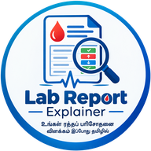

Lab Report Explainer
ஆய்வக அறிக்கை விளக்கி
Upload your blood test report (PDF or photo). Every value is compared with the report's own reference range and explained in simple Tamil or English.

Upload your blood test report (PDF or photo). Every value is compared with the report's own reference range and explained in simple Tamil or English.